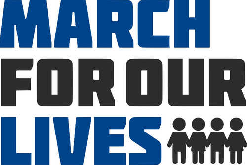
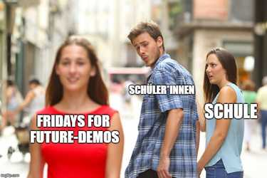

WALKOUT: A BRIEF HISTORY OF STUDENT ORGANIZING
The 2000s • Themes of austerity and tuition increases continued to drive student organizing into the twenty-first century. After New York State cut funding to the City University of New York (CUNY) by $68 million in 2008, students organized against tuition increases through teach-ins, publications, and demonstrations. In 2011, CUNY students played an integral role in the Occupy Wall Street movement and organized Occupy CUNY, sharing information to schools across the CUNY system and organizing free public education events.
In 2012, the impact of the Arab Spring and the Occupy Movement was seen again as Montréal students organized in what has become known as the Printemps Érable (Maple Spring), protesting against a proposed 75% tuition increase over the course of five years. At its peak, a quarter of a million Québec students were on strike. Drawing on inspiration from the Atelier Populaire and other artmaking collectives of previous student movements, students in the graphic design department at UQAM (the Université de Québec à Montréal) created visual material to communicate the demands of the strike. In 2020, UC Santa Cruz students have led students across the University of California system in anti-austerity protests under the #COLA (Cost of Living Adjustment) campaign.
Looking beyond the academy, South African students at the University of Cape Town led a decolonization movement on their campus that eventually spread across the country under #RhodesMustFall. In the United States, university students led anti-fascist demonstrations instigated by invitations extended to far-right thinkers and celebrities to appear on their campuses. High school students have organized against gun violence in the 2018 March for Our Lives and National Walkout Day, and for climate justice in the 2019 Fridays for the Future and Youth Climate Strike. While these last two movements included large-scale physical gatherings, they relied heavily on digital platforms for organizing through hashtags and memes.
CUNYTIME
#occupyCUNY Radical Teach-In
Create Access to Education
CUNY: Thursday's Specials

Stop the Budget Cuts

Printemps Érable

Une Voix

Ne Pas Respecter La Grève

L'Entente

University as Factory / NO!

March for Our Lives
Oops! You Added Too Much

Distracted Boyfriend